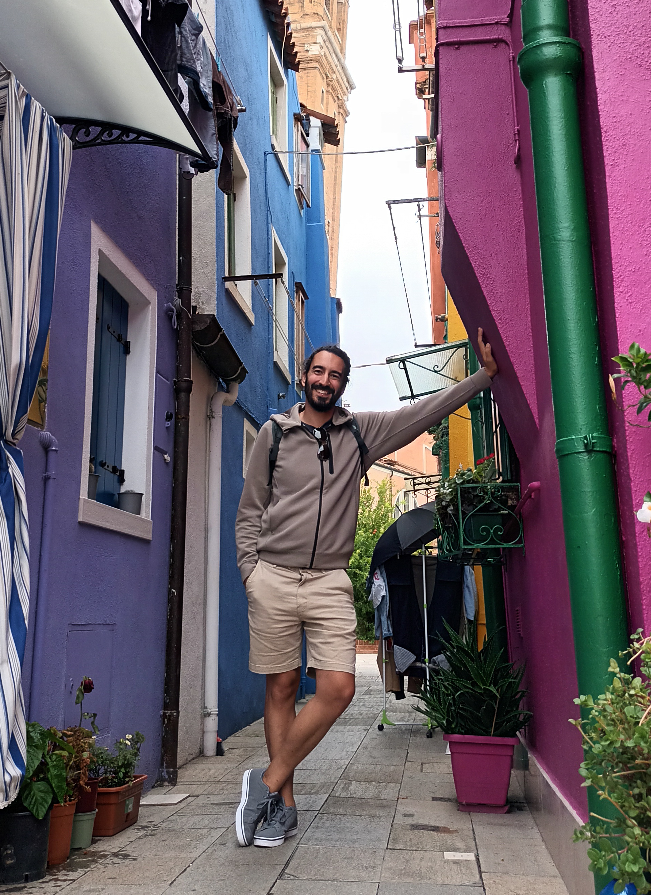
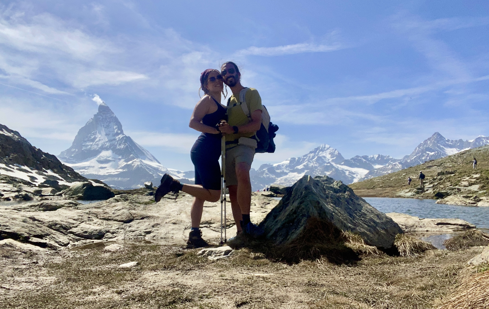
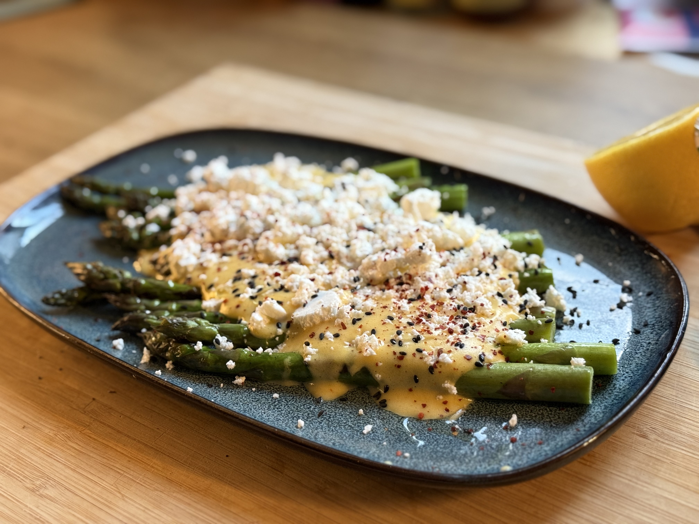
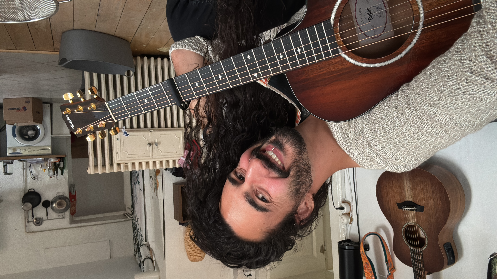

A LITTLE ABOUT ME
A curious mind, always exploring.
I'm someone who enjoys discovering the world, embracing new experiences and following wherever life leads. My motto might just be "What's next?", whether that's somewhere on the other side of the world or something I've never tried before.
Travelling gives me the opportunity to see things from a different perspective, experience different cultures and collect memories along the way. But my curiosity doesn't stop there.
When I'm not exploring somewhere new, you'll probably find me experimenting in the kitchen or making music. Cooking and music are two other ways I enjoy being creative, learning new things and expressing myself.
I don't have everything figured out, and I don't think I need to. I'm simply open to what life brings, always curious about what's next and happy to see where the journey takes me.
BEYOND THE JOURNEY
A few things I enjoy

Exploring
Discovering new places, experiencing different cultures and seeing the world from a different perspective.

Cooking
Trying new recipes, experimenting with flavours and enjoying the creative side of being in the kitchen.

Music
Learning, experimenting and slowly finding my own way as an aspiring musician.
Stay curious. Keep exploring.
There's always something new waiting just around the corner.